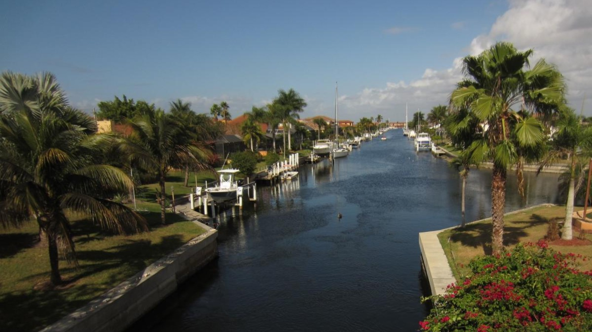
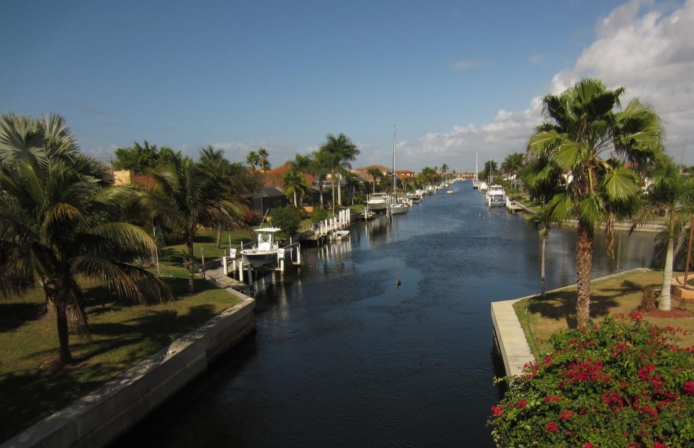

Tile Installer in Punta Gorda, FL
Rock Solid Tile installs bathroom, kitchen, floor, shower, and lanai tile for homeowners throughout Punta Gorda — from the historic downtown to the canals of Punta Gorda Isles.
Last updated: August 12, 2026
Tile Installation for Punta Gorda's Waterfront & Historic Homes
Punta Gorda is a mix of two very different housing stocks: the historic homes around the downtown core and Charlotte Harbor waterfront, and the canal-front homes of Punta Gorda Isles and newer construction built in the years since Hurricane Charley. Rock Solid Tile has installed tile for both — matching tile in an older home's existing footprint, and building out full bathrooms, kitchens, and lanais in newer waterfront construction.
Canal and harbor-front homes see more humidity and salt-air exposure than inland properties, so we pay close attention to moisture-tolerant materials and proper waterproofing on every Punta Gorda project, in addition to the same demolition, layout, setting, and grouting work we do on any tile job.
Punta Gorda Isles' extensive canal system means many of our projects here involve waterfront homes where correct waterproofing matters as much as the finished look, especially around showers, tub surrounds, and lanai tile that see regular exposure to humidity. In the historic downtown core, older homes often need careful tile matching for additions or renovations, while the newer construction filling out the rest of Punta Gorda calls for whole-home flooring installed from scratch. Whatever your Punta Gorda home's age or location, our licensed, insured crew handles the same demolition-to-grout process on every project.

Questions About Your Punta Gorda Tile Project?
Call, request an estimate online, or ask us anything about tile work in Punta Gorda — we're happy to help.
Local Experience That Matches Your Home
From Punta Gorda Isles canal homes to the historic district, we tailor every installation to the property in front of us.
Waterfront & Canal-Front Expertise
Experience installing moisture-tolerant tile in Punta Gorda Isles and other canal and harbor-front homes.
Historic Homes & New Construction
Comfortable matching tile in an older downtown home or building out a full remodel in newer construction.
30+ Years Serving Charlotte County
Three decades of tile installation experience across Punta Gorda and the rest of Charlotte County.
Free, Written Estimates
Every Punta Gorda project starts with a free in-home estimate and a clear, written quote.
Tile Services We Offer in Punta Gorda
Punta Gorda Tile Installation Questions
Do you install tile in Punta Gorda Isles waterfront homes?
Yes, we regularly work in Punta Gorda Isles and other canal and harbor-front neighborhoods, where moisture-tolerant materials and correct waterproofing matter even more than usual.
Can you match tile in an older, historic Punta Gorda home?
Yes. For renovations or additions in Punta Gorda's older homes, we'll do our best to match existing tile or grout, or recommend a clean transition point where an exact match isn't available.
Do you offer free tile estimates in Punta Gorda?
Yes, every estimate in Punta Gorda is free and comes with a written quote. Call (941) 276-0305 or request an estimate online to get started.
Other Areas We Serve
Ready to Start Your Punta Gorda Tile Project?
Get a free, no-obligation estimate from a licensed Southwest Florida tile contractor.
Tile Installation in Punta Gorda, FL — Your Local Punta Gorda Tile Contractor
Rock Solid Tile is a licensed and insured tile installer serving Punta Gorda, FL and the surrounding communities. If you've searched for a "tile installer in Punta Gorda," a "Punta Gorda tile contractor near me," a "bathroom remodel Punta Gorda," or a "tile flooring company Punta Gorda FL," our family-owned crew has more than 30 years of experience installing tile throughout Punta Gorda — from the historic downtown district and Punta Gorda Isles (PGI) waterfront homes to Burnt Store and new-construction neighborhoods. Punta Gorda's mix of historic homes and canal-front new builds means we do everything from careful remodels to whole-home tile in brand-new houses.
Our Punta Gorda tile services include bathroom tile installation, custom shower tile, kitchen tile and backsplash installation, floor tile installation (porcelain, ceramic, natural stone, and LVP), and lanai and pool deck tile. Whether you own a historic downtown Punta Gorda home or a waterfront property in Punta Gorda Isles, Rock Solid Tile is the local Punta Gorda tile installation company to call.
Tile Services in Punta Gorda
- Bathroom tile installation and bathroom remodels in Punta Gorda, FL
- Custom shower tile installation and walk-in showers
- Kitchen tile and backsplash installation
- Floor tile installation — porcelain, ceramic, stone, and LVP
- Lanai, patio, and pool deck tile for Punta Gorda's waterfront homes
As a top-rated, 5-star, licensed and insured tile contractor serving Punta Gorda and all of Southwest Florida, we offer free estimates on every Punta Gorda tile installation project. Call (941) 276-0305 to book your free Punta Gorda tile estimate today.